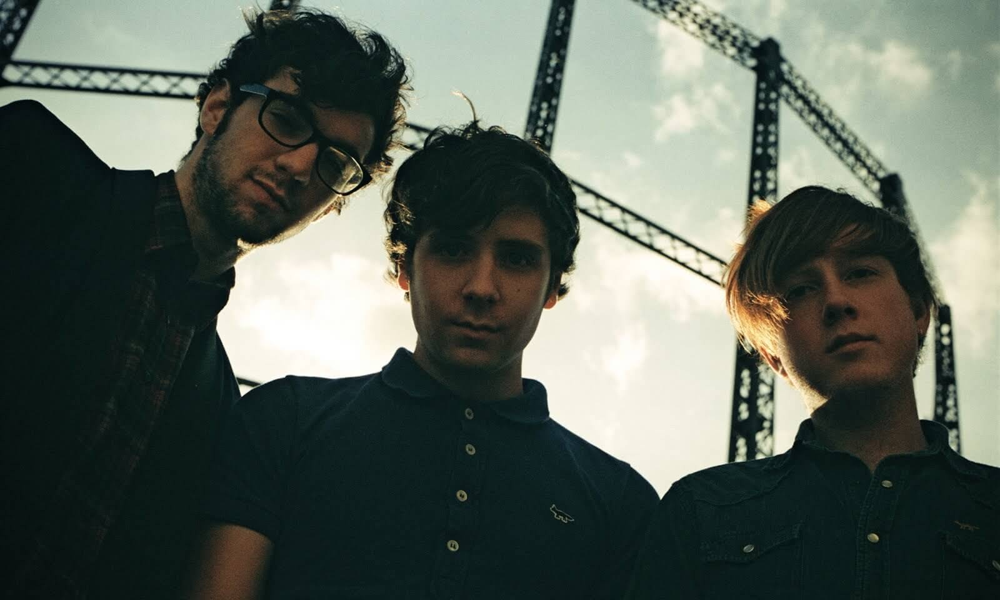
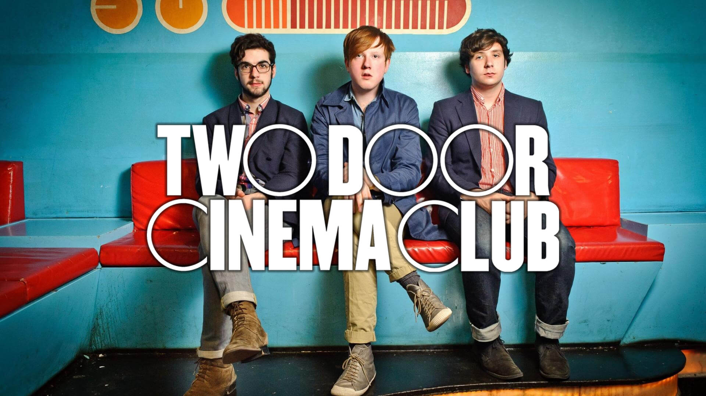

Two Door Cinema Club - североирландская инди-рок группа с элементами электропопа, которая работает вместе с 2007-ого года. История группы начинается с того момента, как Алекс Тримбл и Кевин Байрд попали в один отряд скаутов, но, к великому несчастью или по воле судьбы, так и не познакомились.  Позже, когда Тримбл и Сэм Халлидэй учились в колледже, они встретили Кевина Байрда, который безуспешно пытался встречаться с девчонками. В 2007-ом, они решили быть вместе как группа и дезертировали из университета после того, как их музыкой активно заинтересовался народ на MySpace. Кстати, у «Киноклуба» есть небольшая особенность - в этой группе нет барабанщика. Но сравнительно недавно им пришлось прибегнуть к помощи ударника. Однако, это касается только живых выступлений.  Они подписали контракт с французским лейблом «Kitsuné». На этом лейбле они выпустили свой дебютный альбом «Tourist History» 1 марта 2010 года. Этот альбом стал лучшим ирландским альбомом 2011 года на премии «Choice Music Prize». Композиция «Can Talk» стала частью саундтрека игр «FIFA 11» и «NBA 2K11», песня «Sleep Alone» стала одним из саундтреков игры «FIFA 13». 14 октября 2016 года вышел новый альбом «Gameshow», который очень напоминает старый стиль группы. Плюс ко всему, ребята, впервые за долгое время, обещают дать грандиозный концерт в Дублине. А теперь ваша очередь дать ответ группе Two Door Cinema Club своим сольным концертом в Дублине. Запишите кавер на песню любого ирландского музыканта или группы, снимите это на видео, опубликуйте в youtube, а ссылку пришлите в личные сообщения на странице Просто Радио в Facebook https://www.facebook.com/ProstoRadi.O.NewRock/ или на irishtrue.vgorode.ua. И выиграйте Рокстар Уикенд в столице Ирландии!
конкурс